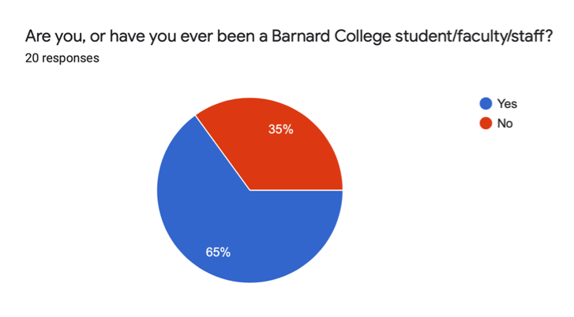
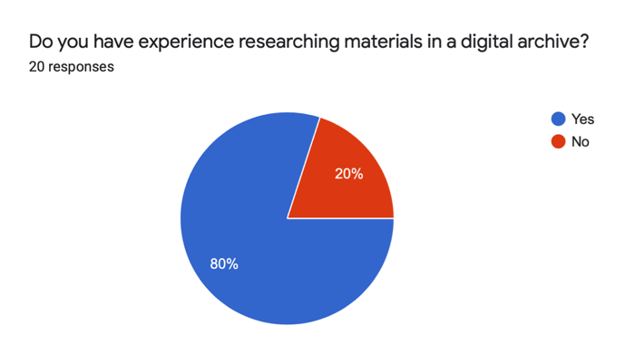
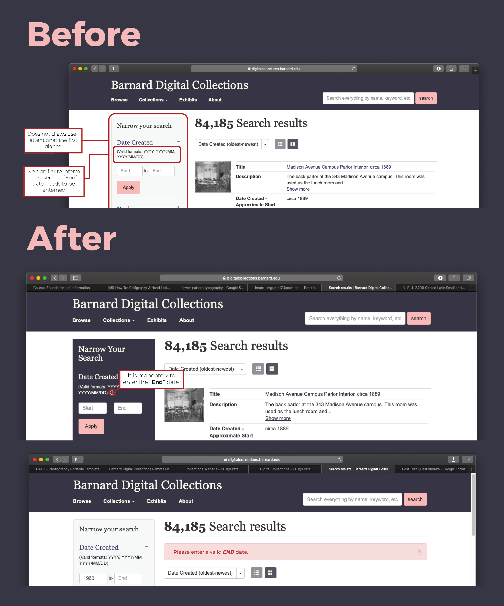
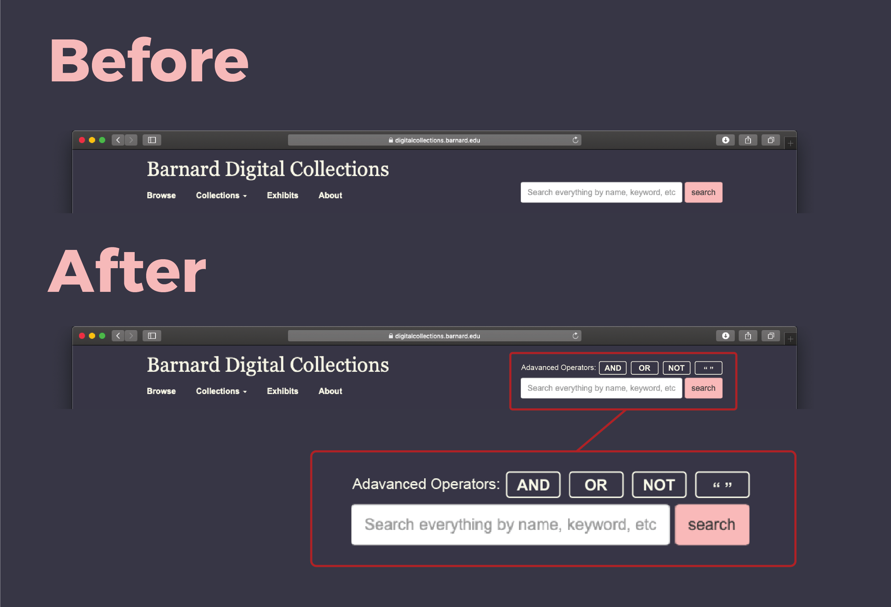
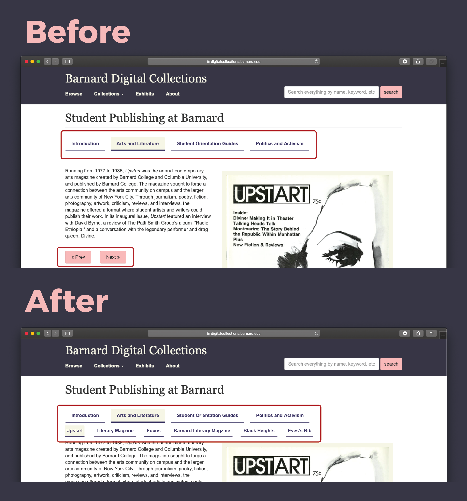
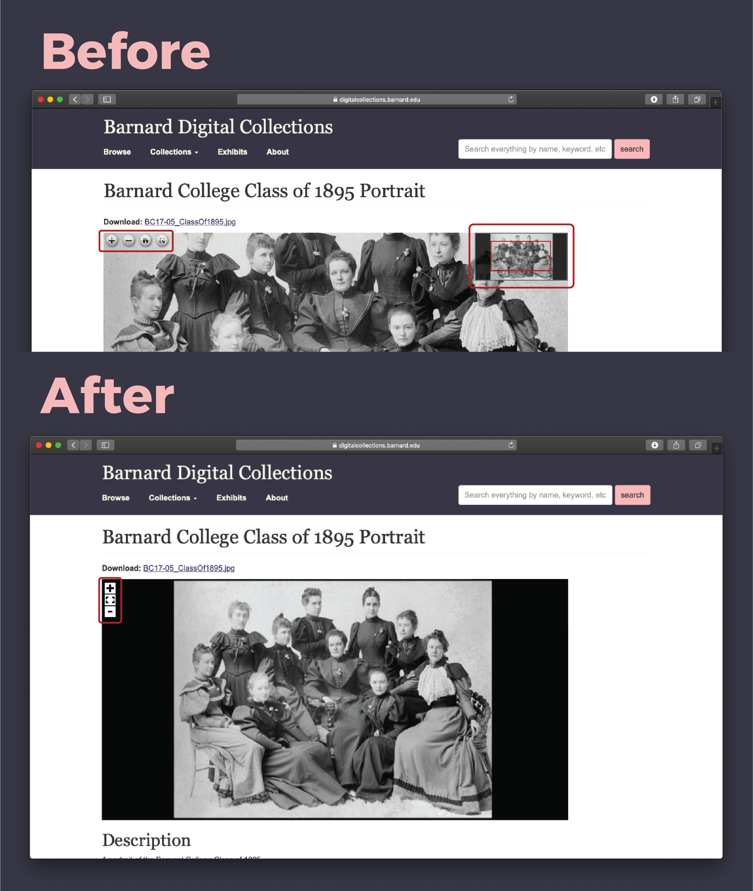

85,000 sources. A search experience that worked against the researcher.
Barnard Digital Collections provides students, staff, and independent researchers with free access to nearly 85,000 digital archival materials — newspapers, scrapbooks, photographs, and academic sources. The interface had seen no significant redesign since launch.
Working with the Center for Digital Experiences under Prof. Elena Villaespesa and Prof. Madhav Tankha, our team of four was tasked with remote usability testing of the desktop site — with a specific brief to evaluate the filter system and exhibits section. A website update was already in the pipeline; the client wanted evidence of what needed to change before development began.

Barnard Digital Collections · Desktop interface · 85% of users access the desktop version
Remote think-aloud with four structured tasks.
From a pool of 20 candidates recruited via the client, we shortlisted 8 participants — a mix of Barnard students, staff, and independent researchers, including some with no prior experience using digital archives. All sessions were conducted remotely via Zoom with screen sharing and audio recording.
The scenario framed participants as independent researchers studying student life at Barnard in the 1960s–70s. Tasks covered: finding a digital exhibit, locating an archived article, using advanced search operators, and finding historical photographs through the filter system.

Figure 1 · Participant backgrounds · Mix of students, staff, and external researchers

Figure 2 · Prior archive experience · Several participants new to digital archives
The filters existed. Most users never found them.
The overall aesthetic of the site received positive feedback — users found it visually clean and appreciated the colour scheme. But as soon as they attempted specific research tasks, a consistent set of usability failures emerged.
A fourth pattern emerged in the exhibits section: users navigating between exhibits had only "Next" and "Prev" buttons — no overview, no sense of position within the collection. This made lateral discovery impossible. A fifth issue appeared when users clicked on archival photographs: the default cropped view caused confusion, with some participants believing they had navigated to a different image entirely.
Four precise fixes. Each traceable to an observed behaviour.
Each recommendation mapped directly to a documented session finding — no design speculation, no best-practice generalisation. The brief was to propose changes that could be implemented through minor development modifications without disrupting the site's existing visual identity.

Recommendation 01 · Narrow Your Search · Added contrast and improved date error signifier

Recommendation 02 · Search operators · Surfaced above global search bar

Recommendation 03 · Exhibit navigation · Sub-nav with all exhibit titles
The fourth recommendation addressed the photograph crop issue: display images in full when first opened, with the option to zoom in or out — and make the zoom controls visually prominent rather than easy to miss. The mockup I designed for this recommendation was the primary deliverable I owned on the project.

Recommendation 04 · Photo display · Full image on first open, prominent zoom controls
Client-validated recommendations. Evidence for a pending rebuild.
The client appreciated the specificity of the findings — and confirmed that several issues had been suspected but not formally documented as usability problems. Having them grounded in observed session data gave the development team a prioritised list to act on as the site update moved forward.
A post-presentation discussion explored the possibility of a horizontal filter layout for improved discoverability. After building a mockup, the team concluded the horizontal approach introduced new problems — cluttered layout and awkward mouse navigation — and recommended against it. That willingness to prototype and discard an idea was a useful lesson in the cost of untested assumptions.
The study reinforced the value of recruiting participants with diverse experience levels. The users who had never used digital archives before surfaced the most significant usability failures — the ones that more experienced researchers had long since learned to work around.